Chapter 3: Results & Benchmarks
All numbers from Qwen 2.5-1.5B running on a single NVIDIA Blackwell B200.
At a Glance
Compression
At 3 bits per coordinate for both keys and values, the KV cache compresses from 1,288 KB down to 257 KB, a 5.02× reduction. This holds across all layers and heads.
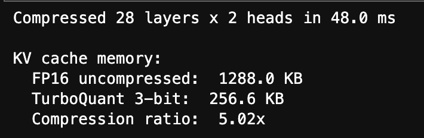
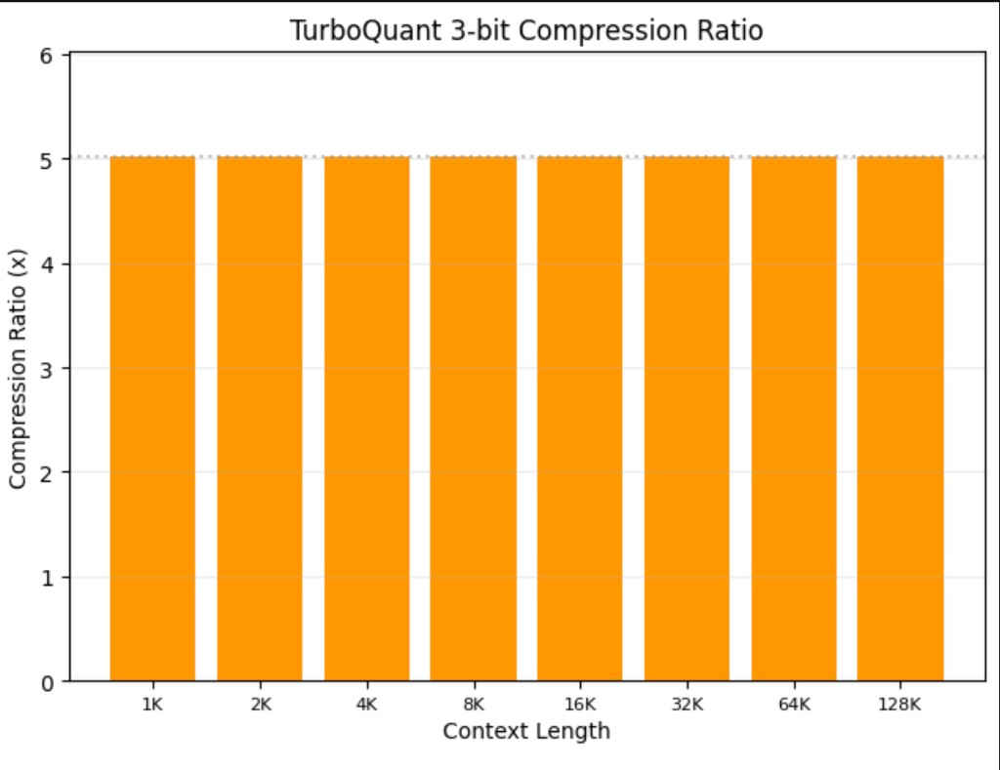
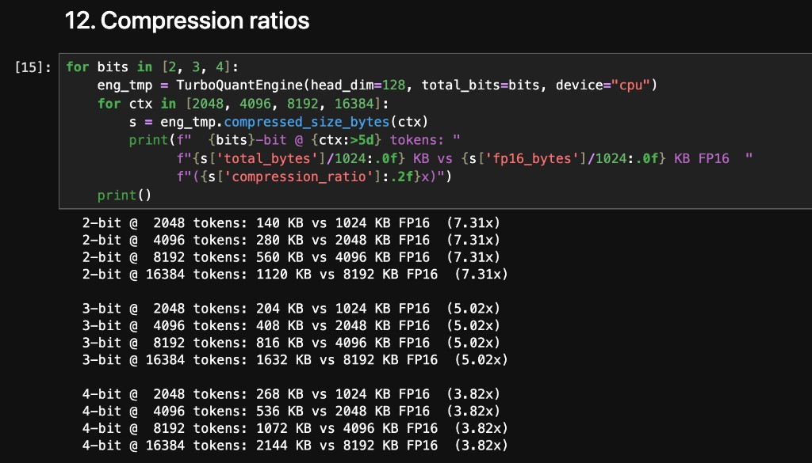
Attention Quality
The fused attention kernel was tested against FP16 reference attention across 5 sampled layers, all KV heads, and 8 query probes per head (mix of random vectors and actual key vectors).
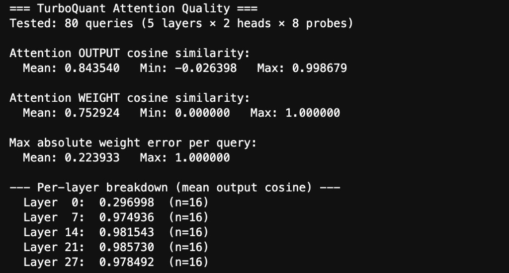
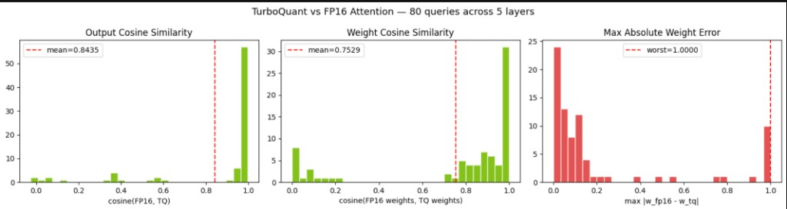
Latency Benchmarks
Latency measured on B200 across sequence lengths from 512 to 16K tokens. The fused kernel does score computation, QJL correction, online softmax, and V accumulation in one pass.
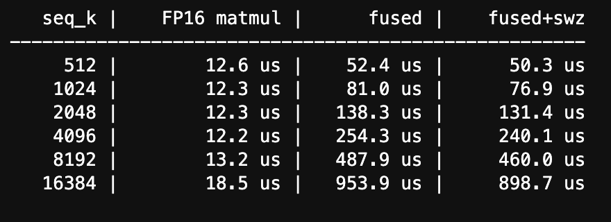
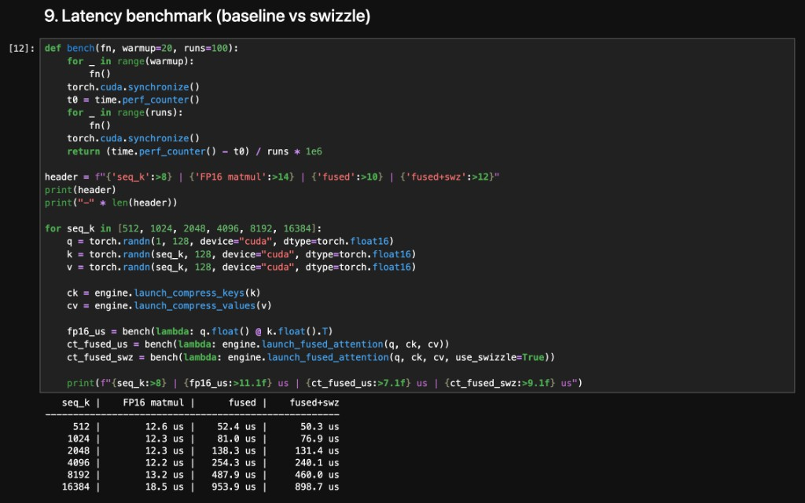
Roofline Analysis
Both standard FP16 attention and TurboQuant's current implementation sit in the memory-bound regime with arithmetic intensity around 1 FLOP/byte. The fully-fused target changes this. Load only compressed data, reconstruct entirely on-chip, and arithmetic intensity jumps past 600. That crosses into compute-bound territory.
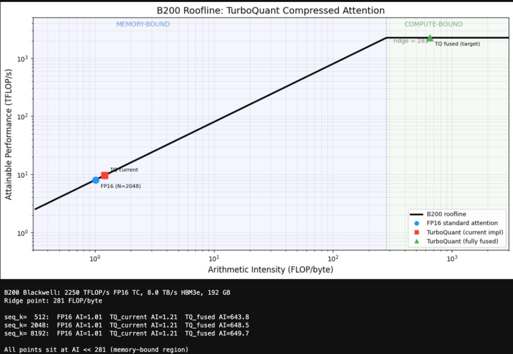
Memory Scaling
KV cache memory scales linearly with sequence length. TurboQuant's compressed representation stays roughly 5× smaller at every point on the curve.
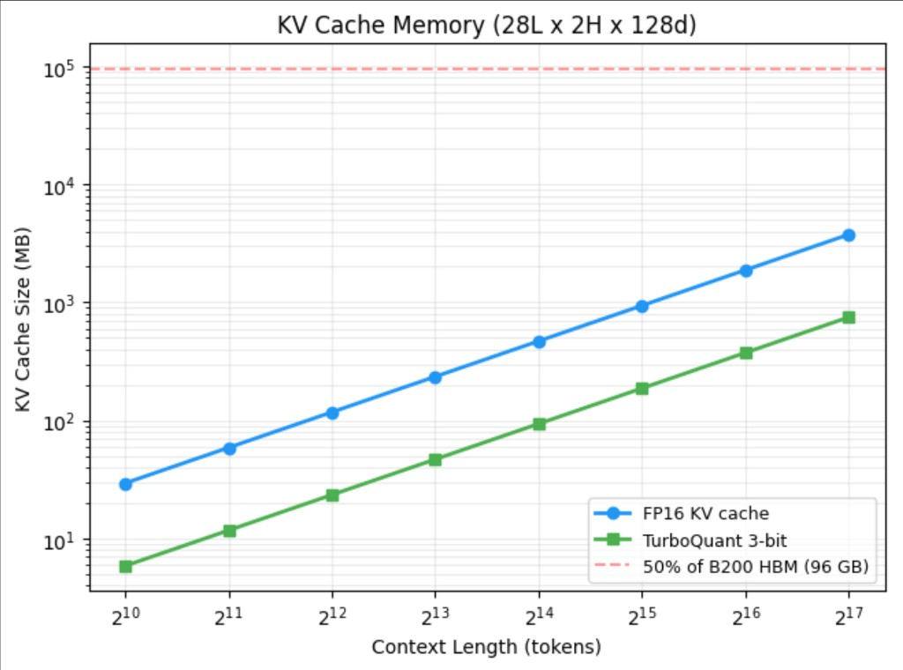
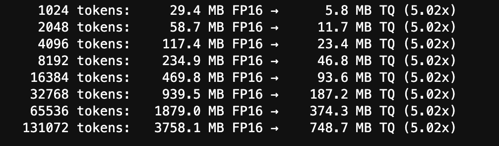
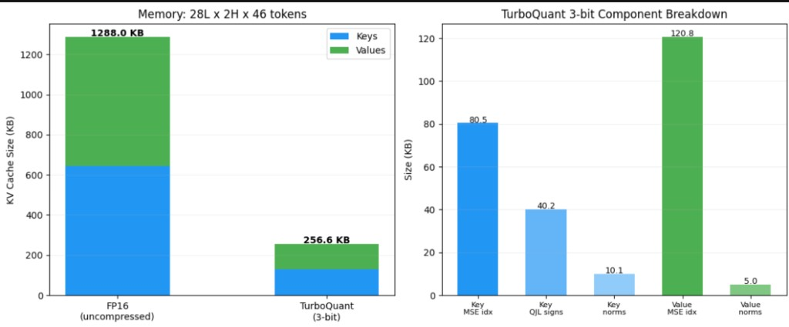
Live Generation
Qwen 2.5-1.5B generating text with its value cache replaced by TurboQuant's 3-bit compressed version. The model produces coherent, on-topic text at 144.7 tok/s.

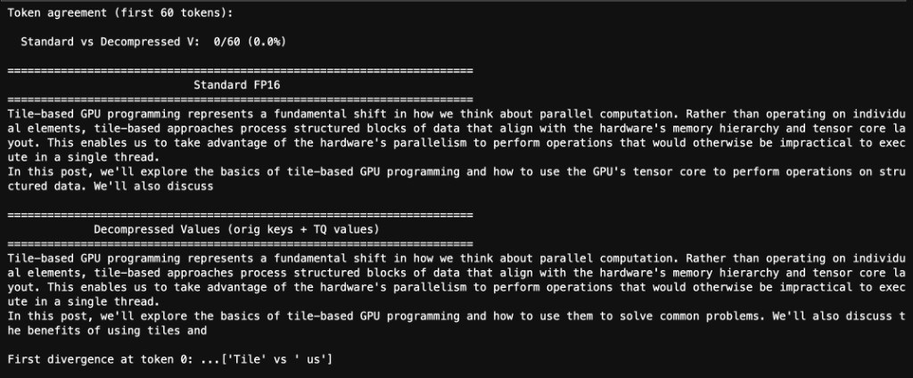
Additional Tests
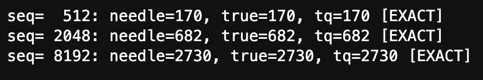
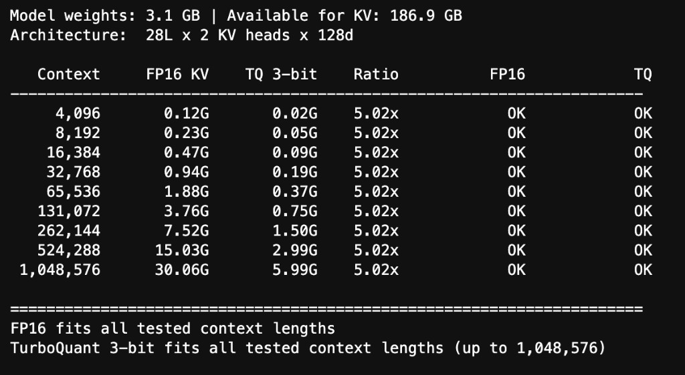
Full Notebook
Every number on this page comes from turboquant_b200_patch1.ipynb,
a Jupyter notebook that runs end-to-end on the B200. It covers model loading,
KV cache extraction, compression, quality analysis, latency benchmarks,
memory scaling, roofline analysis, and live text generation.
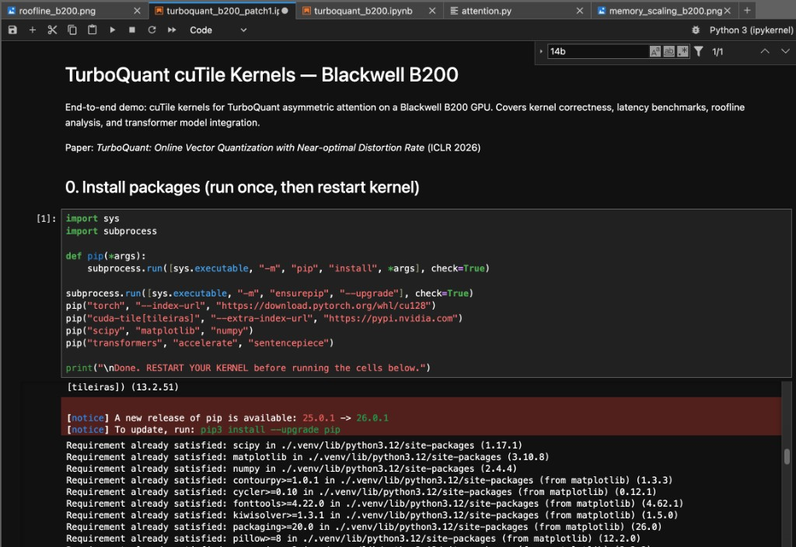
Next Steps
Full Autoregressive Generation
These quality numbers are per-layer. Stacking 28 layers of approximate attention is a different challenge since small errors compound. Next milestone: full end-to-end generation with compressed keys and QJL correction at every layer.
Hitting the Fully-Fused Roofline Target
The kernel currently sits in the memory-bound regime. The fully-fused target pushes arithmetic intensity past 600 into compute-bound territory. V-fused decompression was the first step. Tighter shared memory scheduling and less HBM traffic get us the rest of the way.
Larger Models and MoE
Qwen 2.5-1.5B was the proving ground. The real payoff is on larger models where KV cache dominates memory. MoE architectures already stress memory budgets with expert weights, so 5x cache compression would free significant capacity for longer contexts or higher batch sizes.